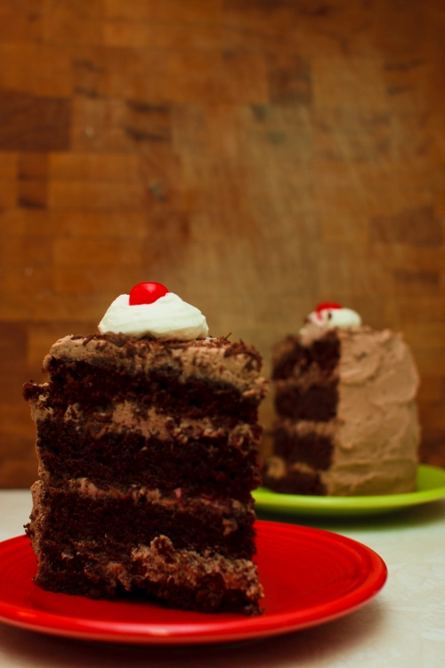

"The Cake" from Portal
Home
Description
You can find plenty of versions of the Portal cake online, often labeled “The cake is not a lie!” but I wanted to really nail both the authenticity and the flavor. If you’re into gaming—or even if you’re not—you’ve probably seen "The cake is a lie" on t-shirts, memes, and just about everywhere else. The phrase comes from the beloved, critically acclaimed game Portal. In the game, you navigate a research facility using a portal gun while being monitored and tormented by the AI, GLaDOS, who promises you cake and grief counseling at the end of your trials. There is even an in-game Easter egg with a recipe for cake written in binary, though it is really just a list of ingredients for a basic chocolate cake with some intriguing garnish ideas.
According to the developers, the Portal cake was inspired by a Black Forest cake from a nearby Chinese bakery. Black Forest cake is a classic German dessert made with chocolate, whipped cream, cherries, and Kirschwasser, a cherry brandy. So, I set out to create a Portal-perfect version with four layers of rich, boozy, chocolate-cherry goodness. It is as delicious and moist as GLaDOS promised and worth the trouble, even if it means getting shot at by adorable sentry turrets.
Bake this cake, throw a big party, and invite all your friends. Just maybe don’t count on your Weighted Companion Cube to RSVP...
Source: GeekyChef.com
Ingredients
- For the Cake
- -1 2/3 cups all-purpose flour
- -2/3 cup unsweetened cocoa powder
- -1 1/2 tsp baking soda
- -1 tsp kosher salt
- -1 1/2 cups granulated sugar
- -1/2 cup vegetable shortening
- -2 eggs
- -1 tsp vanilla extract
- -1 1/2 cups buttermilk
- -1/2 cup cherry liquer or cherry juice
- For the Filling
- -1/4 cup cherry liquer or cherry juice
- -2 cans sour cherries
- -3 cups whipping cream
- -1/4 cup powdered sugar
- For the Garnish
- -1 semisweet chocolate bar, frozen
- -8-10 maraschino cherries (no stems)
- -1 white candle (optional)
Steps
- Preheat your oven to 350°F. Grease and flour two 8-inch cake pans or line them with parchment paper.
- Sift together the flour, cocoa powder, baking soda, and salt. Set aside.
- In a large bowl, beat the shortening and sugar until fluffy. Add the eggs and vanilla, then beat thoroughly.
- Gradually mix in the dry ingredients, alternating with the buttermilk. Beat just until fully combined.
- Divide the batter evenly between the cake pans.
- Bake for 35 to 40 minutes, or until a toothpick inserted in the center comes out clean. Let the cakes cool completely. For easier slicing, chill them in the fridge for a few hours.
- Once cooled, slice each cake horizontally to create four layers. Sprinkle the layers evenly with ½ a cup of Kirsch.
- Drain the canned cherries in a colander to remove excess juice.
- Beat the whipping cream with confectioners' sugar until it reaches your desired consistency.
- Set aside a small portion of the whipped cream for the garnish. Mix cocoa powder into the remaining whipped cream to create the frosting.
- Place the first cake layer on a serving dish. Spread ⅙ of the whipped cream over it, then scatter ⅓ of the cherries on top.
- Add the second cake layer, then repeat the process: spread ⅙ of the whipped cream and top with ⅓ of the cherries.
- Add the third cake layer, spread ⅙ of the whipped cream, and add the remaining cherries.
- Place the final cake layer on top and frost the entire cake with the remaining whipped cream.
- Use a potato peeler to shave the frozen chocolate into thin curls. Press them gently onto the sides and top of the cake until fully coated. You can also use chocolate sprinkles to make things a whole lot easier, but the flavor and texture won't be quite as nice.
- Pipe the reserved whipped cream into eight small circles around the top edge. Place a maraschino cherry on each.
- Place a white candle in the center and light it.
- Congratulations, you have made the cake a reality!